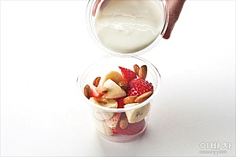

재료
2인분
필수재료
| 딸기(10개) | 바나나(1개) | 플레인요구르트(1개) | 아몬드(적당량)
(숫자)는 밥 숟가락 계량 기준 입니다.
봄을 담은 한입 요리

4월의 대표 과일 딸기와 언제나 구하기 쉬운 바나나를
플레인요구르트에 버무려 상큼하게 즐겨요.
재료
2인분
필수재료
| 딸기(10개) | 바나나(1개) | 플레인요구르트(1개) | 아몬드(적당량)
(숫자)는 밥 숟가락 계량 기준 입니다.

STEP1
딸기와 바나나는 먹기
좋은 크기로 썰고,
Tip.바나나는 통으로 가져가서 먹기 직전에 포크로 조각내도 좋아요.

STEP2
컵에 과일과 아몬드,
플레인요구르트를 각각
담아 준비하고,
Tip.요구르트는 시판 제품 그대로 가져가도 좋아요.

STEP3
먹기 직전 과일에 아몬드와
플레인요구르트를 뿌려 마무리.

Tip.
딸기와 바나나, 플레인요구르트를
믹서에 갈면 달콤하고 부드러운
딸바요구르트 주스가 돼요.
기호에 따라 설탕이나 꿀을 첨가하세요.